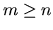
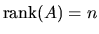
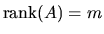
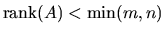
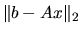
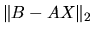

The linear least squares problem is:
In the most usual case  and , and in this case the solution to problem (2.1) is unique, and the problem is also referred to as finding a least squares solution to an overdetermined system of linear equations.
When m < n and , there are an infinite number of solutions x which exactly satisfy b-Ax=0. In this case it is often useful to find the unique solution x which minimizes |x|2, and the problem is referred to as finding a minimum norm solution to an underdetermined system of linear equations.
The driver routine xGELS
solves problem (2.1) on the assumption that
 -- in other words, A has full rank --
finding a least squares solution of an overdetermined system
when m > n, and a minimum norm solution of an underdetermined system
when m < n.
xGELS uses a QR or LQ factorization of A, and also allows A to be
replaced by AT in the statement of the problem (or by AH if A is
complex).
-- in other words, A has full rank --
finding a least squares solution of an overdetermined system
when m > n, and a minimum norm solution of an underdetermined system
when m < n.
xGELS uses a QR or LQ factorization of A, and also allows A to be
replaced by AT in the statement of the problem (or by AH if A is
complex).
In the general case when we may have  -- in other words, A may be rank-deficient -- we seek the minimum norm least squares solution x which minimizes both |x|2 and .
The driver routines xGELSX, xGELSY, xGELSS, and xGELSD, solve this general formulation of problem 2.1, allowing for the possibility that A is rank-deficient; xGELSX and xGELSY use a complete orthogonal factorization of A, while xGELSS uses the singular value decomposition of A, and xGELSD uses the singular value decomposition of A with an algorithm based on divide and conquer.
The subroutine xGELSY is a faster version of xGELSX, but requires more workspace since it calls blocked algorithms to perform the complete orthogonal factorization. xGELSX has been retained for compatibility with Release 2.0 of LAPACK, but we omit references to this routine in the remainder of this users' guide.
The subroutine xGELSD is significantly faster than its older counterpart xGELSS, especially for large problems, but may require somewhat more workspace depending on the matrix dimensions.
The LLS driver routines are listed in Table 2.3.
All four routines allow several right hand side vectors b and corresponding solutions x to be handled in a single call, storing these vectors as columns of matrices B and X, respectively. Note however that problem 2.1 is solved for each right hand side vector independently; this is not the same as finding a matrix X which minimizes .